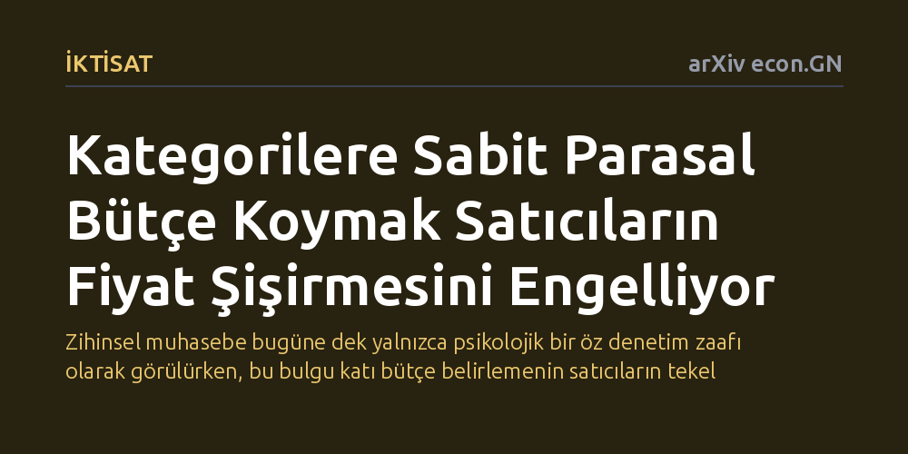

IKTISAT · arXiv econ.GN · 2026-10-13
Çalışma, tüketicilerin harcamalarını zihinsel kategorilere ayırarak sabit bütçeler belirlemesinin ardındaki iktisadi mantığı satıcıların piyasa gücü üzerinden araştırıyor. Bulgular, bir harcama kategorisine sabit parasal bütçe bağlamanın satıcıların fiyat artırma motivasyonunu ortadan kaldırarak tüketiciyi koruduğunu gösteriyor.
Zihinsel muhasebe bugüne dek yalnızca psikolojik bir öz denetim zaafı olarak görülürken, bu bulgu katı bütçe belirlemenin satıcıların tekel gücüne karşı rasyonel bir savunma kalkanı olduğunu gösteriyor.

Günlük hayatımızda maaşımızı aldığımızda ya da harcama planı yaparken parayı zihnimizde görünmez bölmelere ayırırız: mutfak masrafı, kira, eğlence, tatil bütçesi gibi. Davranışsal iktisat literatüründe "zihinsel muhasebe" olarak adlandırılan bu alışkanlık, geleneksel iktisat teorisi tarafından uzun süre sorgulanmıştır; zira standart mantığa göre paranın rengi yoktur ve harcamaları bu şekilde katı kalıplara sokmak tüketicinin faydasını kısıtlar gibi görünür. Mevcut akademik çalışmalar bu davranışı çoğunlukla kişinin kendi dürtülerini kontrol etme çabasıyla, yani bir "öz denetim" aracı olarak açıklamıştır.
Ancak araştırmacılar bu noktada çok temel ve farklı bir soru ortaya atıyor: Ya tüketicinin harcama kategorilerine katı bütçeler koyması, içsel zaaflarından ziyade dış dünyadaki satıcılara karşı geliştirdiği rasyonel bir stratejiyse? Piyasada tekel veya fiyat belirleme gücüne sahip satıcıların varlığında, tüketicinin bütçesini nasıl yönettiği satıcının fiyatlandırma kararlarını doğrudan etkileyebilir. Bu çalışma, zihinsel muhasebenin ardında satıcıların piyasa gücünü kırmaya dönük üçüncü bir iktisadi gerekçe bulunabileceğini ortaya koyuyor.
Yazarlar bu soruyu ampirik bir anket veya saha deneyi yerine, kuramsal mikroiktisat ve oyun kuramı araçlarını kullanarak ele alıyor. Modelde, piyasada fiyat belirleme gücüne sahip bir tekelci satıcı ile belirli bir tüketim kategorisinde karar veren tüketici arasındaki etkileşim matematiksel olarak kurgulanıyor. Tüketicinin piyasaya adım atmadan önce kendine koyduğu taahhüt türleri karşılaştırmalı olarak analiz ediliyor.
Model iki farklı tüketici davranışını karşılaştırıyor: İlkinde tüketici fiziksel bir miktar hedefler (örneğin "ne olursa olsun 5 birim ürün alacağım"), ikincisinde ise sabit bir parasal bütçe taahhüdünde bulunur (örneğin "fiyat ne olursa olsun bu kaleme sadece 100 lira harcayacağım"). Analiz, ilk durumun satıcıya fahiş fiyat artırma imkanı tanıyan tamamen esnek olmayan bir talep yarattığını; ikincisinin ise satıcının fiyatı artırarak elde edebileceği ek kârı matematiksel olarak sıfırlayan birim esnek bir talep doğurduğunu kanıtlıyor.
Araştırmanın temel bulgusu, bir harcama kategorisine sabit bir parasal bütçe bağlamanın satıcının kâr marjını artırma teşvikini tamamen yok ettiğini gösteriyor. Tüketici o kategoriye sabit bir bütçe taahhüt ettiğinde talep birim esnek hale gelir; yani satıcı fiyatı yükselttiğinde tüketilen miktar birebir aynı oranda düşer ve satıcının kasasına giren toplam gelir değişmez. Dolayısıyla satıcı arzı kısıp fiyatı şişirerek hiçbir avantaj elde edemez.
Çalışmanın bir diğer kritik sonucu ise bütçenin "katılığı" üzerine. Eğer tüketici piyasada fiyatlar değiştiğinde kategori bütçesini yeniden optimize etmeye kalkarsa, piyasa gücünden ancak kategoriler birbirinin ikamesi olduğunda korunabiliyor. Buna karşılık, katı ve esnemeyen bir bütçe kuralı belirleyen tüketici, mallar arasındaki ilişki ne olursa olsun her durumda satıcının fiyat şişirmesine karşı yalıtılmış kalıyor. Bu da zihinsel bütçelemede esnek olmamanın tüketiciyi koruyan asıl mekanizma olduğunu gösteriyor.
Bu bulgular, zihinsel muhasebenin piyasadaki işlevine dair bakış açımızı kökten zenginleştiriyor. Bütçeyi belirli kalemlere katı limitlerle bağlamak, sadece kendi harcama dürtülerimizi dizginleyen psikolojik bir hile değil; aynı zamanda tekelci satıcıların fiyatları maliyetin üzerine çekmesini engelleyen stratejik bir "taahhüt mekanizması" görevi görüyor.
Tüketici açısından çıkarılacak en somut ders, belirli harcamalarda katı bir parasal tavan belirlemenin pazarlık gücünü tüketici lehine çevirdiğidir. Fiyatlar arttığında bütçeyi yukarı doğru esnetmek satıcının iştahını kabartırken, "bu işe en fazla şu kadar para ayırdım" diyerek miktarı kısmak, satıcının fiyat gücünü elinden alıyor.